Prior repair
Possible weakened or nonuniform interface.
MATERIALS · MICROSCOPY · MECHANICAL ANALYSIS
Visual inspection, hardness, metallography, SEM, EDS and torsional analysis: a team investigation into a fractured extrusion screw.
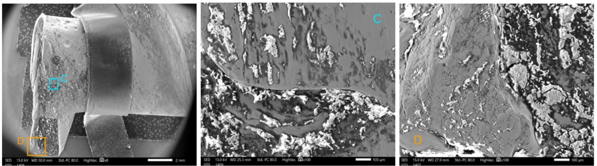
Original project evidence. Figures are extracted from the original Spanish-language project presentation. Key measurements and conclusions are summarized in English alongside the evidence.
01 / FAILURE CONTEXT
A 19 mm extrusion screw, L/D = 30, specified as quenched, ground and nitrided H13 tool steel. Its function: transport, compress, melt and push polymer through the extrusion system.
Service had changed from conventional polymers to reinforced bioplastics, introducing different friction and abrasive conditions. The final event occurred during PLA + ABS pelletizing, after approximately 500 g of processed material.
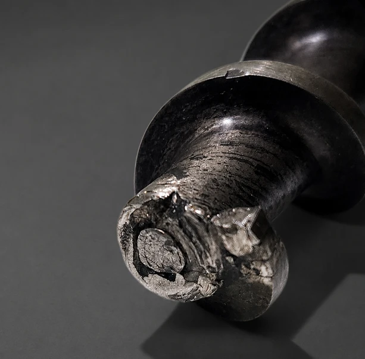
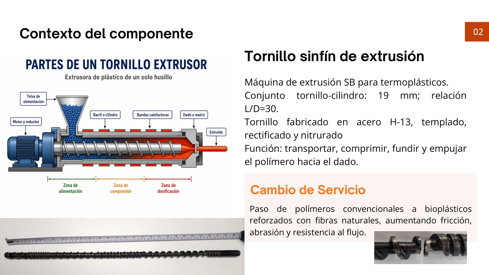
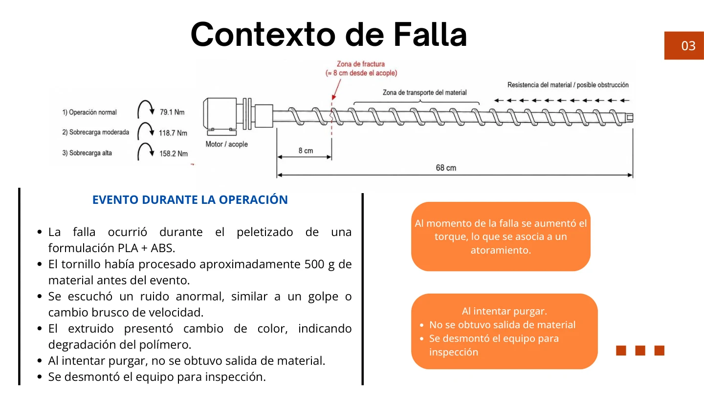
02 / COMPETING HYPOTHESES
Possible weakened or nonuniform interface.
Possible jam or increased torque.
Possible progressive damage.
The investigation tested these hypotheses against physical evidence rather than assigning the cause from appearance alone.
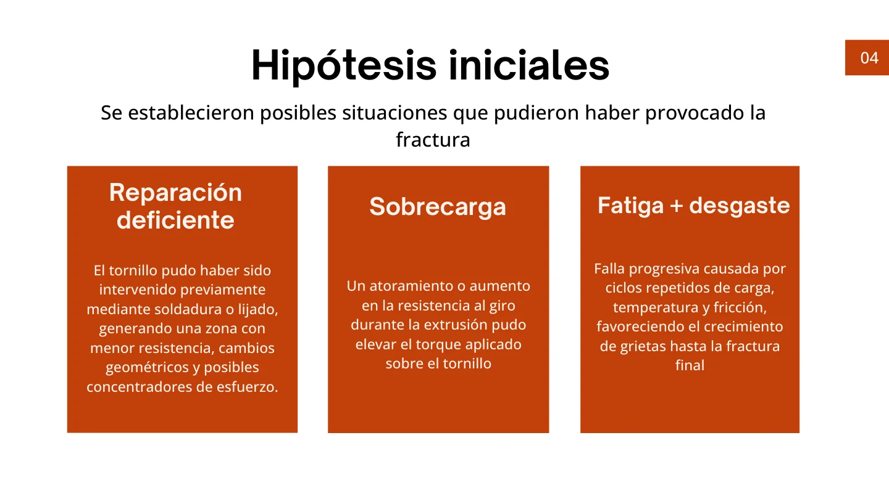
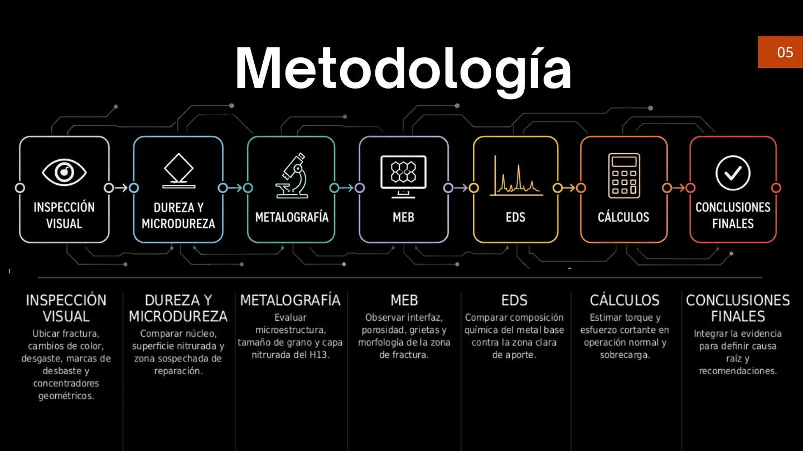
03 / EVIDENCE CHAIN
Changed color and finish, grinding marks, geometric discontinuities and local indentations supported prior intervention near the fracture.
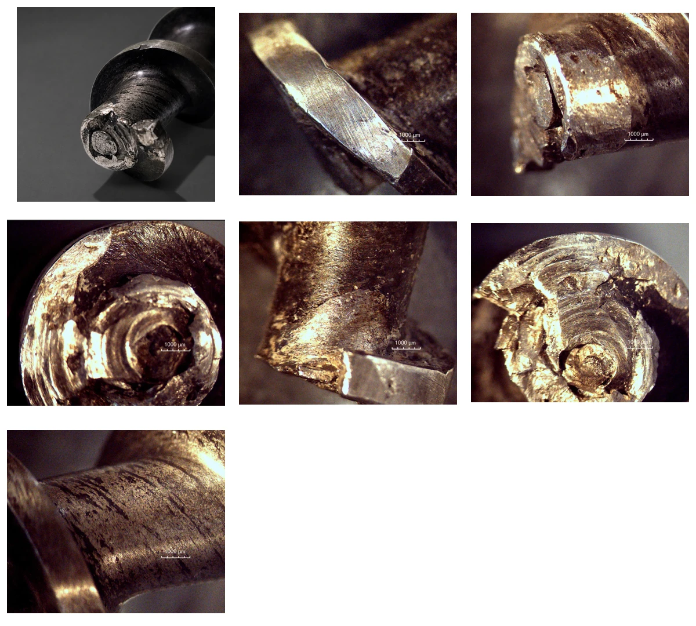
MEASURED RESULTS
| Measurement | Reported value |
|---|---|
| Core microhardness | 423.3 HV |
| Nitrided layer microhardness | 666 HV |
| Nitrided layer thickness | 200–290 μm |
| Grain size | ASTM 10, approximately 15 μm |
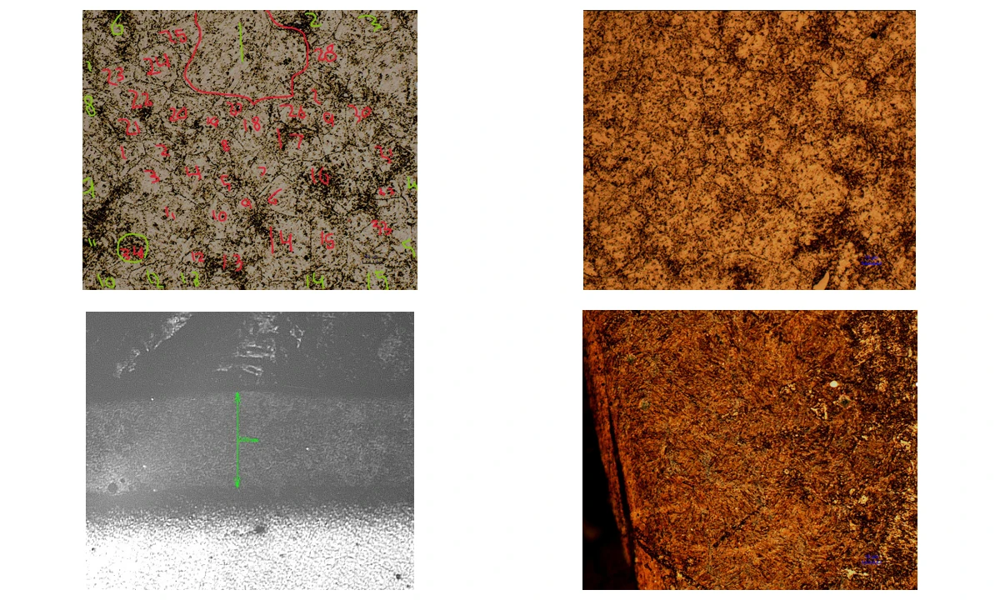
The observations are consistent with heat-treated H13 and a nitrided surface, but do not establish the mechanical strength of the repaired interface.
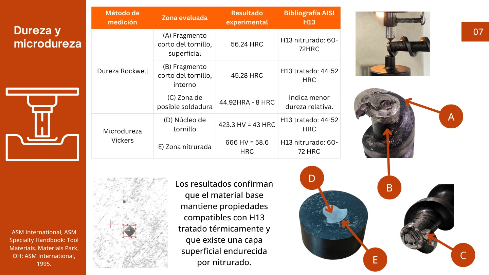
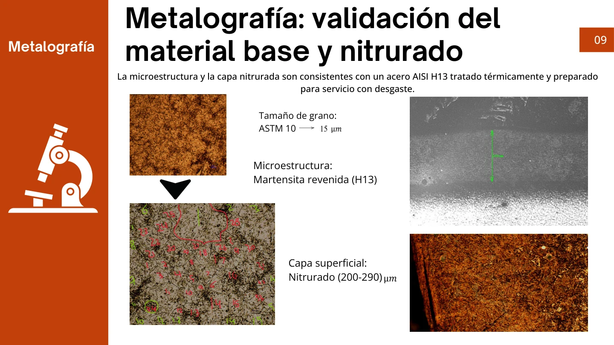
DIRECT MICROSCOPIC & CHEMICAL EVIDENCE
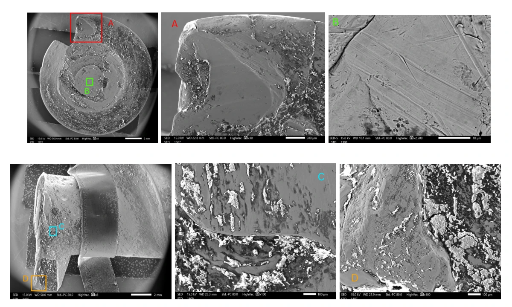
Selected reported mass fractions. The chemical difference supports the presence of another material in the altered/repaired region.
| Element | Core | Altered / repaired region |
|---|---|---|
| Fe | 91.88% | 61.89% |
| Cr | 5.44% | 23.32% |
| Ni | Not listed here | 5.76% |
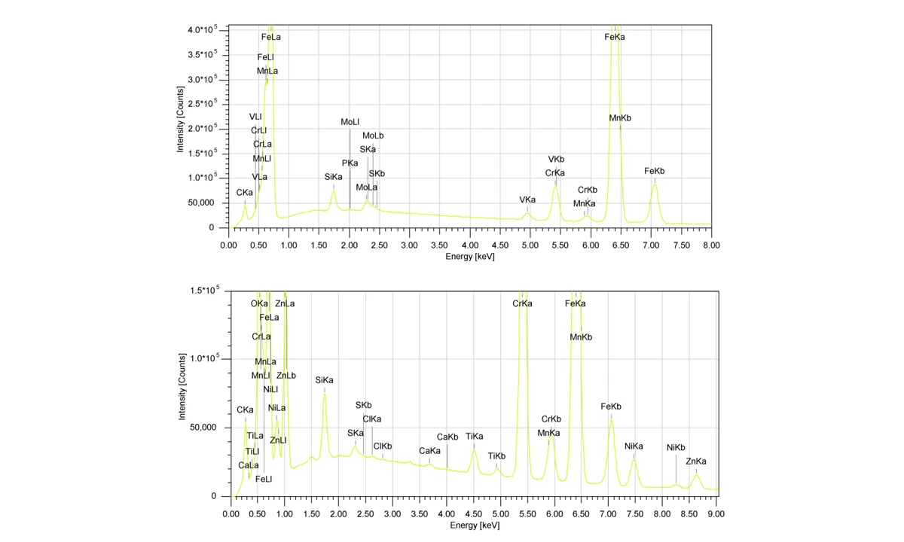
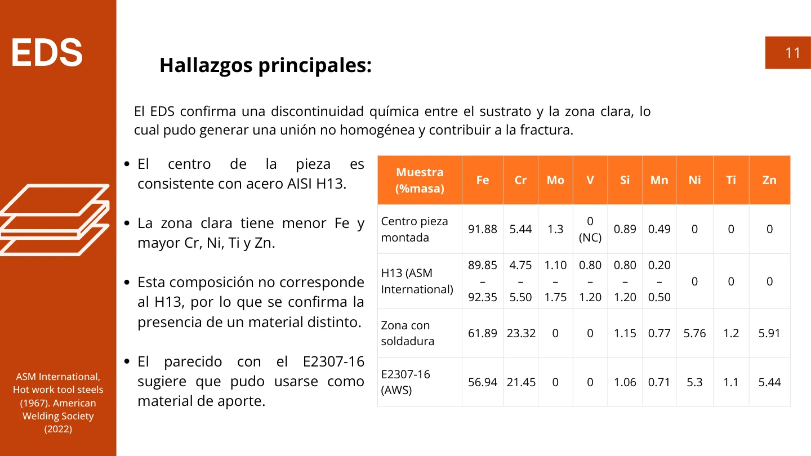
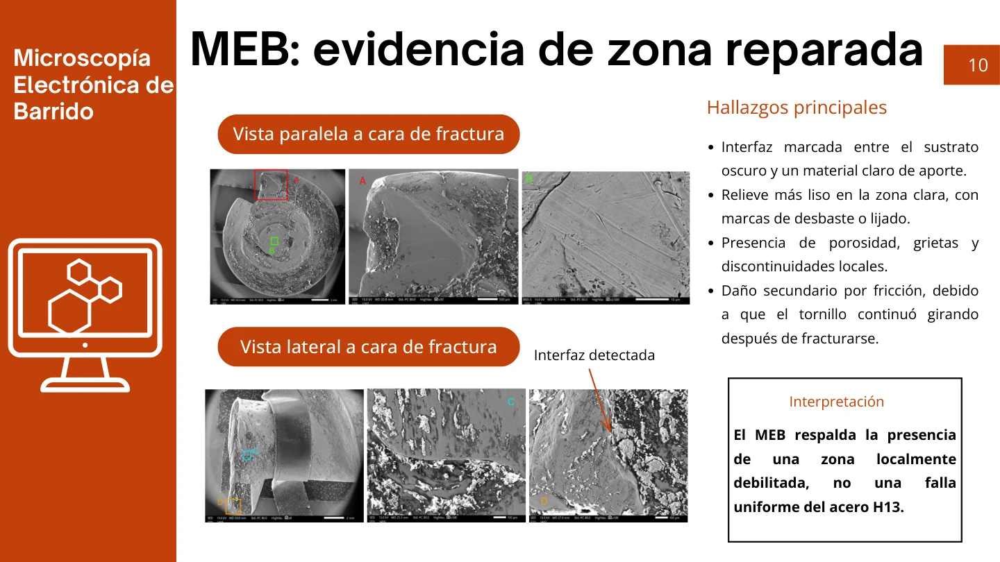
04 / LOAD ANALYSIS
The simplified model used an 11 mm critical solid diameter, 30 RPM screw speed and an estimated 248.6 W operating power at 10 Hz from a nominal 2 hp motor.
Each track ends at the assumed limit for sound material.
| Load case | Torque | Shear stress |
|---|---|---|
| Nominal | 79.1 N·m | 303 MPa |
| 1.5 × nominal | 118.7 N·m | 454 MPa |
| 2 × nominal | 158.2 N·m | 605 MPa |
This does not prove overload was impossible. The model omits the repaired interface, defects and local stress concentrations. Nominal torsion of an intact shaft alone was an incomplete explanation.
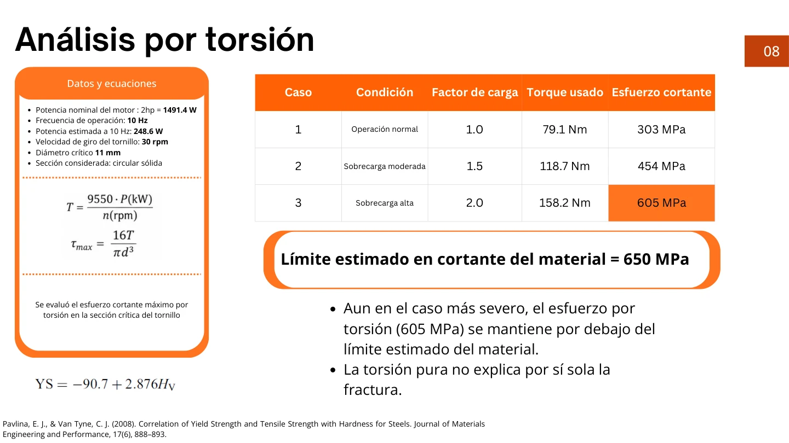
05 / FAILURE RECONSTRUCTION
Prior repair / nonuniform region / defects.
Different polymers and changed friction / abrasive conditions.
Possible jam or increase in torque.
Localized torsional overload in a weakened, previously repaired region.
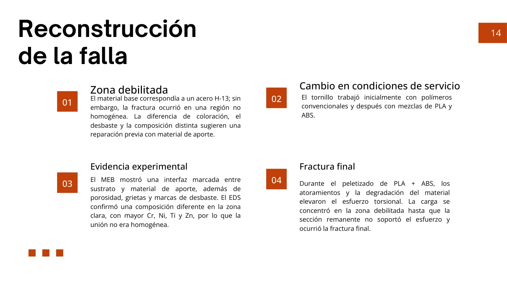
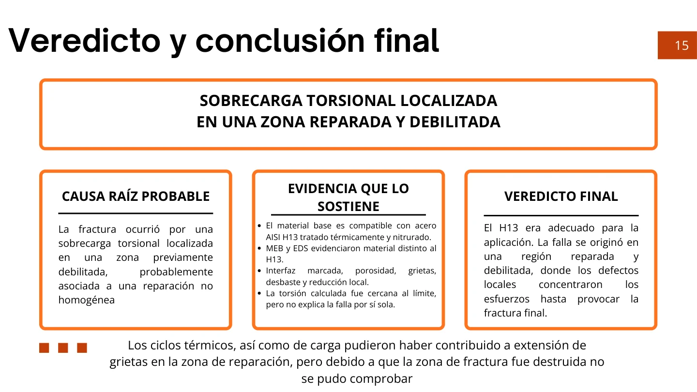
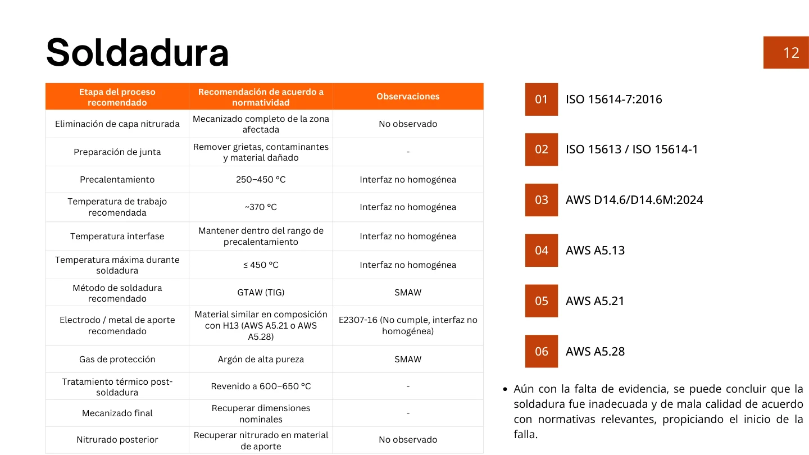
| Stage | Recommended action |
|---|---|
| Repair control | Use a documented, qualified repair process. |
| Before service | Inspect cracks, dimensions, surface condition and hardness. |
| During operation | Monitor torque or motor current and temperature. |
| Abnormal behavior | Stop and investigate unusual noise, flow loss or a jam. |
Academic team investigation · Tecnológico de Monterrey
← Explore more engineering projects